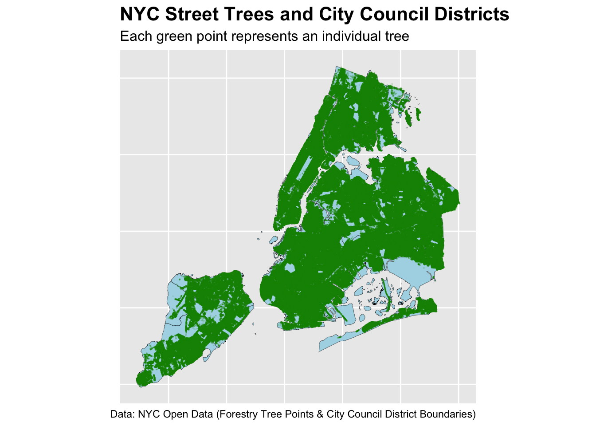
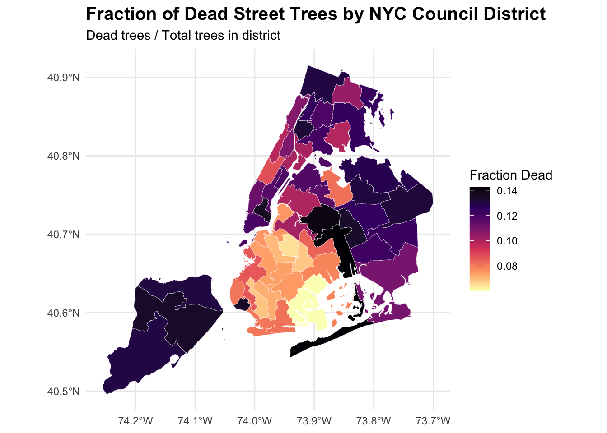
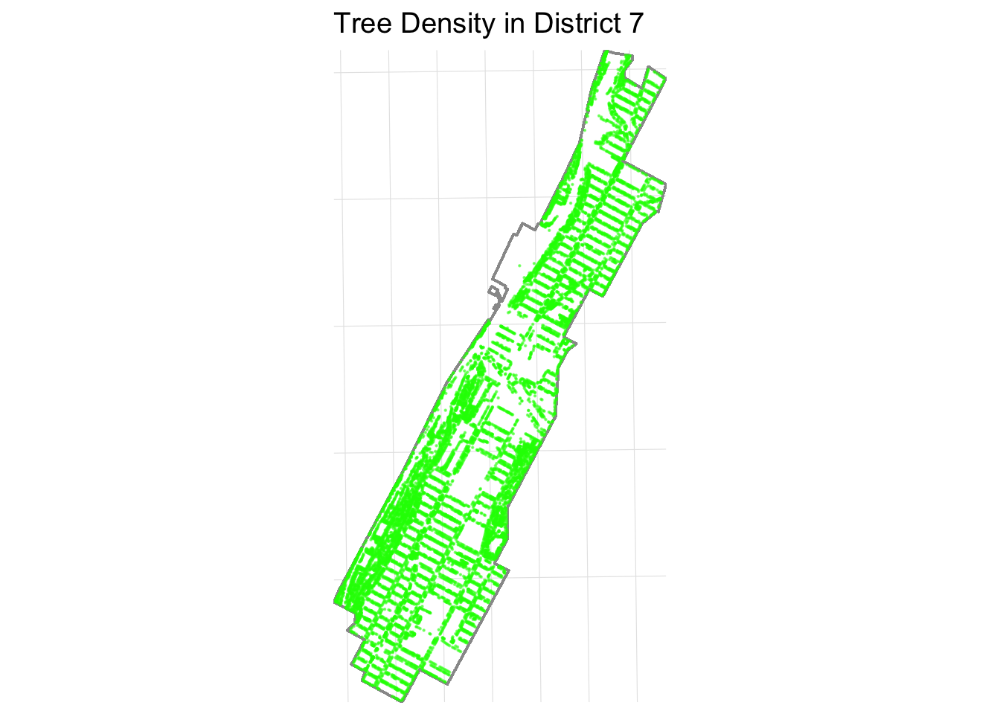
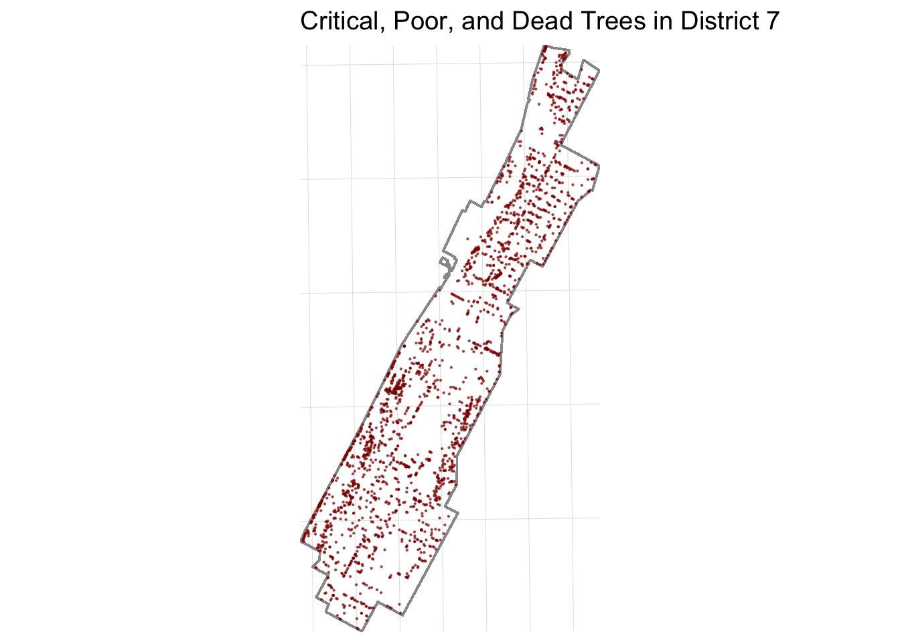
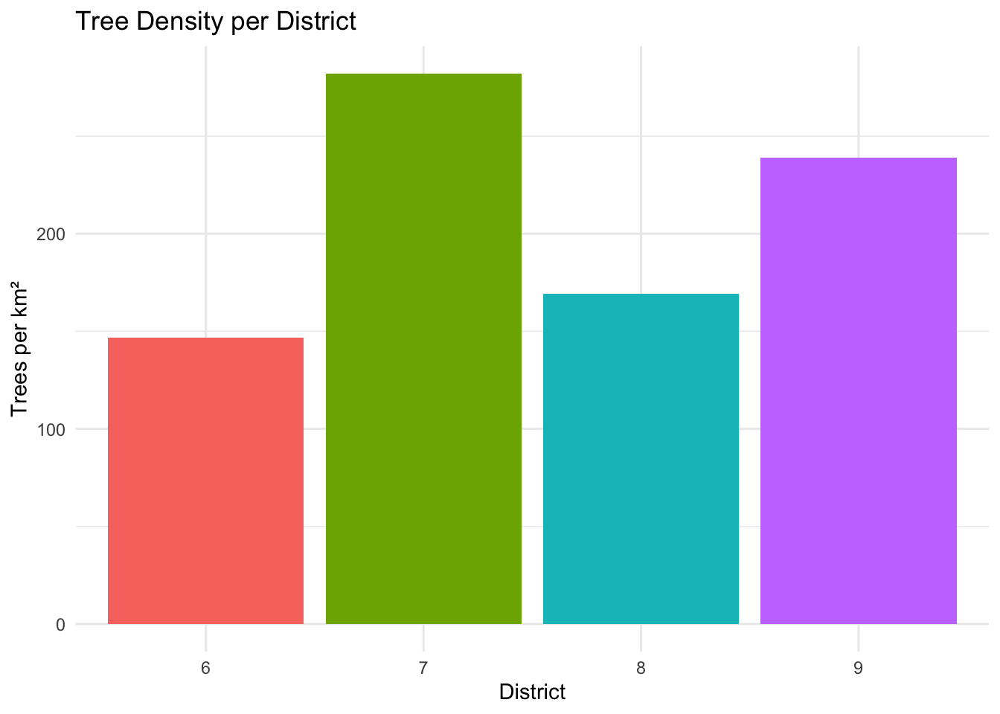
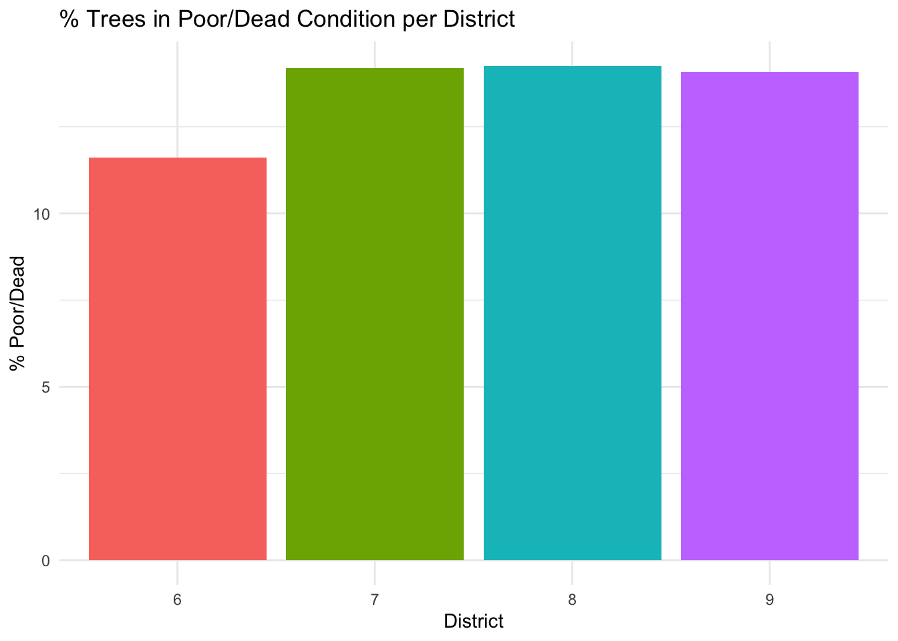

Mini-Project 03 - Visualizing and Maintaining the Green Canopy of NYC
Author
socoyjonathan
Published On: 2025-11-25
Introduction
Urban forests play a crucial role in supporting the environmental, social, and public-health wellbeing of New York City. Street trees improve the air quality, reduce the infernal sun’s effect, manage stormwater, and enhance our neighborhoods. Understanding how these trees are distributed across the city and how their health varies by area is critical in support urban infrastructure and planning future maintenance efforts. In this project, we want to analyze the spatial distribution and condition of street trees across New York City Council Districts, using geospatial data from the NYC Department of City Planning and tree inventory data from the NYC Open Data Portal.
{fig-align=“center”, height=“30%”}
Data Acquisition
Since New York City is divided into 51 City Council Districts, we must first acquire the most recent district boundary shapefile from the NYC Department of Planning to understand counts and types of trees within these districts. These boundaries will define the geographic framework needed to associate each tree with the district it belongs to.
R Code
library <-function(pkg){## Mask base::library() to automatically install packages if needed## Masking is important here so downlit picks up packages and links## to documentation pkg <-as.character(substitute(pkg))options(repos =c(CRAN ="https://cloud.r-project.org"))if(!require(pkg, character.only=TRUE, quietly=TRUE)) install.packages(pkg)stopifnot(require(pkg, character.only=TRUE, quietly=TRUE))}library(httr2)library(sf)library(dplyr)library(glue)library(jsonlite)library(readr)library(ggplot2)library(leaflet)library(rvest)library(purrr)library(stringr)library(leaflet)library(leaflet.extras)library(RColorBrewer)library(lubridate)library(viridis)
Task 1: Download NYC City Council District Boundaries
The shapefile is downloaded responsibly and stored as a static zip archive into the data/mp03/ directory, where we can extract its contents and load the shapefile into R using the sf package and the st_read() function. Additionally, we make sure to simplify our shapes down to 10km to make visualizations faster and smoother.
R Code
download_nyc_cdb_file <-function() {# set up directory fname <-file.path("data", "mp03")if (!dir.exists(fname)){message("Creating MP03 directory:")dir.create(fname, recursive=TRUE) }# set up filenames zip_file ="nycc_25c.zip" data_file ="nycc_25c/nycc.shp" zip_path <-file.path(fname, zip_file) shp_path <-file.path(fname, data_file)#url <- paste0("https://www.nyc.gov/content/planning/pages/resources/datasets/city-council/", zip_file)if(!file.exists(zip_path)){message("Downloading City Council boundaries:")download.file("https://s-media.nyc.gov/agencies/dcp/assets/files/zip/data-tools/bytes/city-council/nycc_25c.zip", destfile = zip_path, mode ="wb") } else {message("Zip file already exists!") }# unzip dataif (!file.exists(shp_path)){message("Unzipping data:")unzip(zip_path, exdir = fname) } else{message("Shapefile already unzipped!") }# read in shapefilemessage("Reading shapefile:") nyc_cdbs_data <-st_read(shp_path, quiet=TRUE) transformed_nyc_cdbs <-st_transform(nyc_cdbs_data, crs="WGS84")message(" NYC City Council boundaries successfully transformed.")return(transformed_nyc_cdbs)}nyc_cdbs <-download_nyc_cdb_file()nyc_cdbs_simplified <- nyc_cdbs |>mutate(geometry =st_simplify(geometry, dTolerance =10))
Task 2: Download Tree Points
Next, we obtain New York City’s complete street tree inventory from NYC OpenData. This dataset contains every recorded street tree, including its species, size, health, and structural attributes. Because the full dataset is too large to download in a single request through the public API, it must be retrieved in small sections and combined into one complete file! To ensure responsible data use, we store each downloaded portion locally. This prevents repeated downloads and reduces unnecessary strain on public data servers.
R Code
download_nyc_tree_points <-function(BATCH_SIZE =50000, ENDPOINT ="https://data.cityofnewyork.us/resource/hn5i-inap.geojson"){# set up directory fname <-file.path("data", "mp03")if (!dir.exists(fname)){message("Creating MP03 directory:")dir.create(fname, recursive=TRUE) }# set up geojson file combined_path <-file.path(fname, "nyc_tree_points.geojson")if (file.exists(combined_path)){cat("Combined tree data already exists - loading ....")return(st_read(combined_path, quiet =TRUE)) } TREE_NUMBER <-1 ALL_DATA <-list() END_OF_EXPORT =FALSE OFFSET <-0# loop through to export datawhile (!END_OF_EXPORT){ file_path <-file.path(fname, glue("tree_points_{TREE_NUMBER}.geojson"))cat("Requesting items", OFFSET, "to", BATCH_SIZE + OFFSET, "\n")if (!file.exists(file_path)){ req <-request(ENDPOINT) |>req_url_query(`$limit`= BATCH_SIZE, `$offset`= OFFSET) resp <-req_perform(req)if (resp_status(resp) !=200){stop("Error: failed to download data (HTTP ", resp_status(resp), ")") }writeBin(resp_body_raw(resp), file_path)cat("Tree point", TREE_NUMBER, "downloaded...\n") } else {cat("Tree point", TREE_NUMBER, "already exists, skipping download...\n") } batch_data <-st_read(file_path, quiet=TRUE) geom <-st_geometry(batch_data) df <-st_drop_geometry(batch_data) df <- df |>mutate(across(where(~inherits(.x, "POSIXt")), as.character)) batch_data <-st_as_sf(bind_cols(df, geom)) ALL_DATA <-c(ALL_DATA, list(batch_data)) n_rows <-nrow(batch_data)cat("Tree point ", TREE_NUMBER, " has ", n_rows, " rows\n")if(n_rows < BATCH_SIZE){ END_OF_EXPORT <-TRUEcat("End of Data Export Reached\n") } else { OFFSET <- OFFSET + BATCH_SIZE TREE_NUMBER <- TREE_NUMBER +1 } } ALL_DATA <-bind_rows(ALL_DATA)cat("Tree Point data export complete:", NROW(ALL_DATA), "rows and", NCOL(ALL_DATA), "columns.\n")st_write(ALL_DATA, combined_path, delete_dsn =TRUE, quiet=TRUE)cat("Combined GeoJSON saved to: ", combined_path)return(ALL_DATA)}nyc_trees <-download_nyc_tree_points()
Data Integration and Initial Exploration
Task 3: Plot All Tree Points
With our council district boundaries and the NYC street tree records, we can combine them to create our first citywide visualization. This initial map simply overlays the locations of all recorded street trees on top of the district outlines.
R Code
ggplot() +geom_sf(data = nyc_cdbs_simplified, # map skeletonfill="lightblue",color="black",size=0.1) +geom_sf(data = nyc_trees, # layered trees on topcolor ="green4",size=0.01,alpha=0.1) +# how can I improve the tree map visualization (max 1 point?) ~ Shiny# different types of trees (break up into categories) i.e. young, dead, species ~ facet# heatmapslabs(title ="NYC Street Trees and City Council Districts",subtitle ="Each green point represents an individual tree",caption ="Data: NYC Open Data (Forestry Tree Points & City Council District Boundaries)" ) +theme(plot.title =element_text(size =16, face ="bold"),plot.subtitle =element_text(size =12),axis.text =element_blank(),axis.ticks =element_blank() )

But let’s make an interactive NYC map of every Prunus tree, my favorite species:
The next step is to understand how tree coverage varies across New York City’s individual council districts. Using spatial joins, we will match each tree point with the district polygon that physically contains it.
Once we apply spacial joins, it becomes possible to consider several basic but important exploratory questions and perhaps we’ll learn something awesome along the way.
Which council district has the most trees?
To identify which City Council District contains the greatest number of trees, we first aggregated tree counts by district and visualized results as a choropleth map:
R Code
# Which council district has the most trees?cd_trees_counts <- trees_in_districts |>st_drop_geometry() |># remove geometry to summarize as regular tablegroup_by(CounDist) |># district unique identifiersummarize(tree_count =n()) |>arrange(desc(tree_count))#cd_most_treescd_distribution <- nyc_cdbs_simplified |>left_join(cd_trees_counts, by ="CounDist")ggplot(cd_distribution) +geom_sf(aes(fill = tree_count), color ="white", size=0.1) +scale_fill_gradient(low ="lightgreen",high ="darkgreen",na.value ="grey90",name ="Tree Count") +theme_minimal() +labs(title ="NYC Street Tree Distribution by City Council Districts", ) +theme(plot.title =element_text(size =14, face ="bold"), )
The resulting map shows substantial variation in tree counts across the 51 districts. Higher-density tree regions appear in darker green, while lower-density districts appear lighter.
Thus, City Council District 51 contains the most trees in NYC. This district stands out clearly on the map as one of the darkest shaded areas, confirming the numerical result.
Which council district has the highest density of trees?
We can go further on understanding tree abudance in each district by accounting for differences in district size by computing the number of trees per square meter for each district and visualize these densities using a choropleth:
R Code
# Compute density table (no geometry)cd_tree_densities <- trees_in_districts |>st_drop_geometry() |># remove geometry to summarize as regular tablegroup_by(CounDist) |># district unique identifiersummarize(tree_count =n(),area =unique(Shape_Area) ) |>mutate(density = tree_count / area) |>arrange(desc(density)) # join densities back to district geometriescd_tree_densities_sf <- nyc_cdbs_simplified |>left_join(cd_tree_densities, by ="CounDist")# Plotggplot(cd_tree_densities_sf) +geom_sf(aes(fill = density), color ="white", size =0.1) +scale_fill_viridis_c() +theme_minimal() +labs(title ="Tree Density by NYC Council District",fill ="Trees per sq. unit" )
City Council District 7 has the highest density of trees. This district appears in the brighest yellow color on the density map, indicating a significantly higher concentration of trees relative to its geographic area.
Which district has highest fraction of dead trees out of all trees?
Next, we’ll investigate relative tree health by identifying which district has the highest proportion of dead trees. Using the health status variable from the tree dataset, we can identify the percentage of trees marked as “Dead” within each district and visualize the distribution of dead-tree fractions:
R Code
#Which district has highest fraction of dead trees out of all trees?fractional_dead_trees_per_cd <- trees_in_districts |>st_drop_geometry() |># remove geometry to summarize as regular tablegroup_by(CounDist) |># district unique identifiersummarize(tree_count =n(),dead_trees =sum(tpcondition =="Dead", na.rm=TRUE),dead_trees_fraction = dead_trees / tree_count ) |>arrange(desc(dead_trees_fraction)) # join fraction of dead trees with district geometriescd_dead_fraction_sf <- nyc_cdbs_simplified |>left_join(fractional_dead_trees_per_cd, by ="CounDist")# Map of the fraction of dead treesggplot(cd_dead_fraction_sf) +geom_sf(aes(fill = dead_trees_fraction), color ="white", size =0.1) +scale_fill_viridis_c(option ="magma",direction =-1,na.value ="grey90",name ="Fraction Dead" ) +theme_minimal() +labs(title ="Fraction of Dead Street Trees by NYC Council District",subtitle ="Dead trees / Total trees in district" ) +theme(plot.title =element_text(size =15, face ="bold"),plot.subtitle =element_text(size =11) )

R Code
# District with the highest fraction of dead treescd_most_dead_trees <- fractional_dead_trees_per_cd |>slice_max(dead_trees_fraction, n=1)
The results reveal that City Council District 32 has the highest fraction of dead trees, indicating a potential local issue, such as poor soil quality, extensive construction activity, or insufficient maintenance.
What is the most common tree species in Manhattan?
To determine the species most frequently observed in Manhattan, we must first identify what borough each tree belongs to based on council district ranges. For Manhattan, we will be looking at council districts 1 through 10.
R Code
#What is the most common tree species in Manhattan?# Attach boroughs to CounDistcd_to_borough <- trees_in_districts |>mutate(Borough =case_when( CounDist %in%1:10~"Manhattan", CounDist %in%11:18~"Bronx", CounDist %in%19:32~"Queens", CounDist %in%33:48~"Brooklyn", CounDist %in%49:51~"Staten Island" ) )# species counts per district in Manhattan and select most dominant speciesdominant_species_per_cd <- cd_to_borough |>st_drop_geometry() |>filter(Borough =="Manhattan") |>count(CounDist, genusspecies, name ="tree_count") |>group_by(CounDist) |>slice_max(tree_count, n =1) |>ungroup()# join into manhattan polygonsmanhattan_districts <- nyc_cdbs_simplified |>filter(CounDist %in%1:10) |>left_join(dominant_species_per_cd, by ="CounDist")# Add a shortened species labelmanhattan_districts <- manhattan_districts |>mutate(species_short =case_when( genusspecies =="Gleditsia triacanthos var. inermis - Thornless honeylocust"~"Thornless honeylocust",TRUE~ genusspecies ) )ggplot(manhattan_districts) +geom_sf(aes(fill = species_short), color ="white", size =0.2) +scale_fill_viridis_d(option ="turbo",name ="Most Common Species" ) +coord_sf(datum =NA) +theme_minimal() +labs(title ="Most Common Street Tree Species by Council District",subtitle ="Manhattan (Districts 1–10)",fill ="Dominant Species" ) +theme(plot.title =element_text(size =14, face ="bold"),plot.subtitle =element_text(size =10),legend.position ="right" )
The most common tree species in Manhattan is Gleditsia triacanthos var. inermis - Thornless honeylocust, with 17303 recorded trees of this species.
What is the species of the tree closest to Baruch’s campus?
To finish our exploratory analysis, let’s identify the tree nearest to our school, Baruch College. We first define a spatial point for the campus using its latitude and longitude coordinates, compute distances from all trees to this point and select the tree with the minimum distance.
R Code
# What is the species of the tree closest to Baruch’s campus?baruch_info <-read_html("https://en.wikipedia.org/wiki/Baruch_College") |>html_element(".geo") |>html_text() |>str_split_1(";") |>as.numeric() |>set_names(c("latitude", "longitude")) |>bind_rows()baruchLatitude <- baruch_info$latitudebaruchLongitude <- baruch_info$longitudebaruch_st_point <-function(lat, lon, ...){st_sfc(st_point(c(lon, lat))) |>st_set_crs("WGS84")}# Make Baruch point firstbaruch_point <-st_sfc(st_point(c(baruchLongitude, baruchLatitude)), crs =4326)# Transform to match trees CRSbaruch_point <-st_transform(baruch_point, st_crs(cd_to_borough))closest_tree_to_Baruch <- cd_to_borough |>mutate(distance =st_distance(geometry, baruch_point)) |>slice_min(distance, n=1)baruch_buffer <-st_buffer(baruch_point, dist =500) # 500 metersleaflet() |>addTiles() |># Closest tree as orangeaddCircleMarkers(data = closest_tree_to_Baruch,radius =6,color ="orange",stroke =TRUE,weight =2,fillOpacity =1,popup =~paste("Closest tree<br>","Species:", genusspecies, "<br>","Condition:", tpcondition) ) |># Baruch campus point as redaddMarkers(data = baruch_point,popup ="Baruch College",icon =icons(iconUrl ="https://cdn-icons-png.flaticon.com/512/684/684908.png",iconWidth =25, iconHeight =25) ) |># 500 m buffer around BaruchaddPolygons(data = baruch_buffer,color ="blue",weight =2,fillColor ="blue",fillOpacity =0.2,popup ="500m buffer around Baruch" ) |># Zoom to Baruch locationsetView(lng = baruchLongitude, lat = baruchLatitude, zoom =16)
The tree closest to Baruch College is a Quercus acutissima - sawtooth oak, located approximately 32.6 meters from campus.
Final Insights
Upper West Side Urban Forest Renewal Initiative
Prepared for: Members Of The City Council
District: NYC Council District 6: Upper West Side
Prepared by: Jonathan Sucuc Socoy, Legislative Aide
The Upper Manhattan Urban Forest Renewal Initiative aims to reinvigorate and preserve the tree canopy across District 7 by replacing dead and damaged trees, replanting stumps, and improving the health of existing trees along residential streets and near parks. As we discovered above in Task 4, Inquiry 2, District 7 has the highest density of trees, as such it would be reasonable to say the district’s tree networks along streets have taken a beating, showing signs of aging and much needed maintenance. Our team proposes an investment to replace and improve the health of trees to ensure our trees shine beautifully and continue to provide shade and clean air for our neighborhood and my home!
Pruning & Maintenance: 3331 existing trees with critical, poor or dead condition ratings
Focus Species: Platanus x acerifolia - London planetree, Gleditsia triacanthos var. inermis - Thornless honeylocust, Quercus palustris - pin oak, these trees were selected since they are the most prominent species in District 7, along with a nice canopy shape, resilience, and resistance to urban stressors.
Let’s first begin by visualizing District 7’s density distribution of trees:
R Code
library(forcats)trees_d7 <- trees_in_districts |>filter(CounDist ==7)district7 <- districts_with_trees |>filter(CounDist ==7)# Project to metric CRStrees_d7_proj <-st_transform(trees_d7, 32618)district7_proj <-st_transform(district7, 32618)# Convert tpcondition to numeric condition scoretrees_d7_proj <- trees_d7_proj |>mutate(condition_score =case_when( tpcondition =="Good"~3, tpcondition =="Fair"~2, tpcondition =="Poor"~1, tpcondition =="Dead"~0,TRUE~NA_real_ ),condition_score_factor =factor(condition_score, levels =c(3,2,1,0)) )# Bounding box for zoom bbox7 <-st_bbox(district7_proj)xlim <-c(bbox7["xmin"] -0.001, bbox7["xmax"] +0.001)ylim <-c(bbox7["ymin"] -0.001, bbox7["ymax"] +0.001)# Tree Density Map ggplot() +geom_sf(data = district7_proj, fill =NA, color ="grey60", linewidth =0.5) +geom_sf(data = trees_d7_proj, color ="green", alpha =0.5, size =0.12) +coord_sf(xlim = xlim, ylim = ylim, expand =FALSE) +labs(title ="Tree Density in District 7") +theme_minimal(base_size =12) +theme(panel.grid.major =element_line(linewidth =0.2, colour ="grey90"),axis.title =element_blank(),axis.text =element_blank(),axis.ticks =element_blank() )

We can begin to see why District 7 has the highest tree density. Let’s also visualize the distribution of the 8 most common trees in District 7:
Beautiful right! However, despite overall tree abundance, District 7 has one of the city’s highest proportions of aging street trees as we will show shortly, and replacement rates have not kept pace with removals. Compared to nearby districts, District 7 shows a need for maintenance:
We can even focus even closer on trees with critical, poor or dead conditions only:
R Code
dead_trees_d7 <- trees_d7_proj |>filter(tpcondition =="Dead"| tpcondition =="Poor"| tpcondition =="Critical")# Dead Tree Map ggplot() +geom_sf(data = district7_proj, fill =NA, color ="grey60", linewidth =0.5) +geom_sf(data = dead_trees_d7, color ="darkred", alpha =0.6, size =0.12) +coord_sf(xlim = xlim, ylim = ylim, expand =FALSE) +labs(title ="Critical, Poor, and Dead Trees in District 7") +theme_minimal(base_size =12) +theme(panel.grid.major =element_line(linewidth =0.2, colour ="grey90"),axis.title =element_blank(),axis.text =element_blank(),axis.ticks =element_blank() )

This is serious, folks! Our trees need our help! To further put this situation into context, let’s compare District 7’s trees with critical, poor or dead conditions with that of District 6, 8, and 9:
First, let’s visually compare the tree densities for each district mentioned.
R Code
# bar graph comparisonsdistricts_to_compare <-c(6, 7, 8, 9)trees_subset <- trees_in_districts |>filter(CounDist %in% districts_to_compare)trees_subset <- trees_subset |>mutate(condition_score =case_when( tpcondition =="Good"~3, tpcondition =="Fair"~2, tpcondition =="Poor"~1, tpcondition =="Dead"~0,TRUE~NA_real_ ) )district_summary <- trees_subset |>st_drop_geometry() |>group_by(CounDist) |>summarize(total_trees =n(),poor_trees =sum(tpcondition %in%c("Poor", "Dead"), na.rm =TRUE),stumps =sum(!is.na(stumpdiameter)),area_m2 =first(Shape_Area), .groups ="drop" ) |>mutate(trees_per_km2 = total_trees / (area_m2 /1e6), # trees per km²percent_poor = poor_trees / total_trees *100,percent_stumps = stumps / total_trees *100 )# Trees per km²:ggplot(district_summary, aes(x =factor(CounDist), y = trees_per_km2, fill =factor(CounDist))) +geom_col() +labs(title ="Tree Density per District",x ="District",y ="Trees per km²" ) +theme_minimal() +theme(legend.position ="none")

We can see that District 7 has the most trees per km² so our earlier findings still hold!
Now let’s do a quantitative analysis to compare District 7 and its neighbors:
Key metrics from comparison with neighboring districts (6, 7, 8, 9):
High proportion of poor/dead trees: District 7 has 2,210 trees in poor or dead condition, which is the second-highest among the four districts, representing 14.2% of its tree population.
R Code
# % Poor Condition:ggplot(district_summary, aes(x =factor(CounDist), y = percent_poor, fill =factor(CounDist))) +geom_col() +labs(title ="% Trees in Poor/Dead Condition per District",x ="District",y ="% Poor/Dead" ) +theme_minimal() +theme(legend.position ="none")

Highest number and percentage of stumps: District 7 has 5,732 stumps, representing 36.8% of its tree population, higher than all other neighboring districts.
R Code
# % Stumps on record:ggplot(district_summary, aes(x =factor(CounDist), y = percent_stumps, fill =factor(CounDist))) +geom_col() +labs(title ="% Stumps on Record per District",x ="District",y ="% Stumps" ) +theme_minimal() +theme(legend.position ="none")
Thus, the large number of stumps indicates opportunities for replanting initiatives, which would have a direct and visible impact on District 7’s urban canopy.
Conclusion:
Overall, this project has demonstrated how District 7 is our highest-priority district in Manhattan for intervention: it has both a high absolute number of poor/dead trees and the highest number of stumps, making it an ideal candidate for a tree replacement/replanting program! By reinvigorating our canopy, we can ensure that District 7 remains one of New York’s greenest and most livable neighborhoods for generations to come.